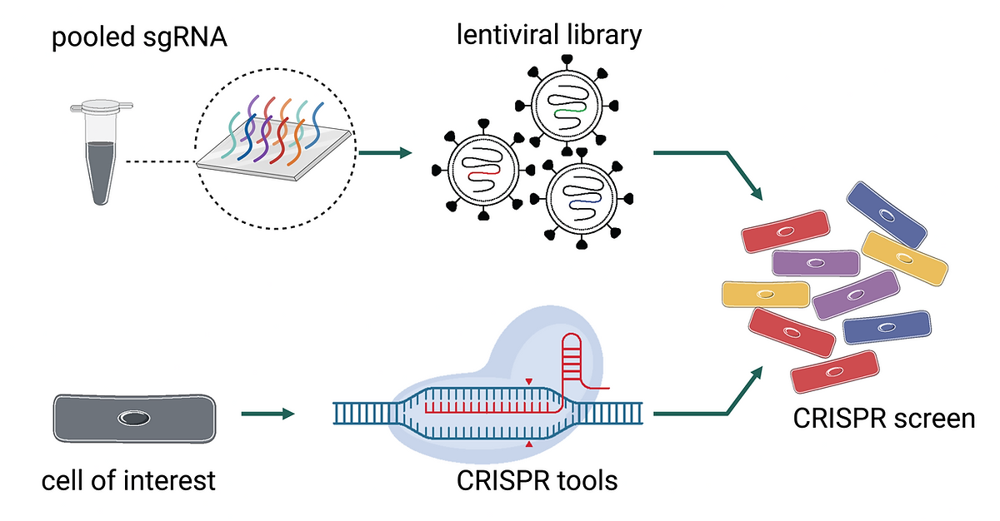

CRISPRi/a Screening

CRISPR interference (CRISPRi) and CRISPR activation (CRISPRa) are high-throughput screening methods that enable large-scale exploration of gene function. Utilizing libraries of single-guide RNAs (sgRNAs), these techniques can target a vast number of genes simultaneously. CRISPRi silences genes, while CRISPRa activates them, without cutting the DNA. The large-scale nature of these screens allows us to rapidly identify key genes involved in specific biological processes or diseases. By observing the effects in cells, such as growth patterns or response to drugs, we can pinpoint critical genes, thereby accelerating the pace of research and the discovery of potential new treatments.